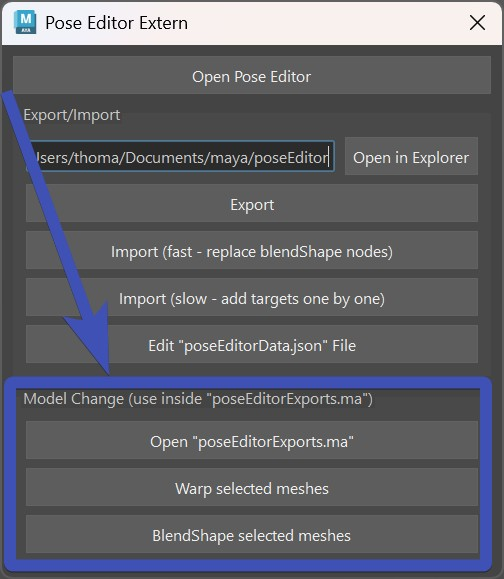

Pose Editor Standalone
From Kangaroo Builder Version 5.16 you can also use the Pose Editor on rigs that are not built with Kangaroo Builder.
This workflow has been tested and verified with mGear and AdvancedSkeleton rigs, and therefore should
also work for all other maya rigs out there.
However since it hasn't gone through completed productions with Non-Kangaroo Rigs yet, this part is still experimental at this point.
So if you are running into any issues, please don't hesitate to reach out in the Forum!
We'll answer those requests with high priority.
To open the Pose Editor with Non-Kangaroo Rigs, start by running these lines in Python:
from kangarooTools import poseEditorStandalone
poseEditorStandalone.showUI(sDefaultCtrlTwistAxis='x')
Ctrl Twist Axis - sDefaultCtrlTwistAxis
MGear and AdvancedSkeleton usually have their Ctrl Twist Axis at X, so you can leave the default when you have one of these rigs.
But if your twist axis is mostly Y (as on Kangaroo Rigs), then switch that flag to Y.
Keep in mind this only affects the default options when you create interpolators. Adjusting the interpolator options manually after
interpolator creation has the same outcome.
And in there open the Pose Editor with this button:

Always be in Default Pose for creating Interpolators
If you are using the Pose Editor on Non-Kangaroo Rigs, ALWAYS be in default pose when you create or mirror an interpolator or on import. Because it stores that pose as the default,
and uses it for certain operations later.
Rigs built with Kangaroo Builder already know the default poses, therefore the pose doesn't matter on Kangaroo Rigs.
Export/Import
With the Export and Import buttons you can export/import the setup.
Warning
Do NOT import it twice! Importing it is only meant to do on a clean rig that you've rebuilt. If you are not rebuilding rigs, import/export wouldn't help you much at this point.
If you want to import by script (Python), you can do it this way:
from kangarooTools import poseEditorStandalone
poseEditorStandalone.loadFromFolderPath(sDir)
Reusing Interpolators from another character
Reusing Interpolator from another character easily works with the Export/Import options.
But you can also copy/paste a few interpolators, using the JSONEditor. For more info, check further below at Making adjustments on exported data
Model Update
If you have a model update, and you can rebuild your rig - open the poseEditorExports.ma file, and use the model change
buttons - all at the bottom of the starter UI:

Basically you just select the new model (drag it into your scene first), and the corresponding _poseEditorBlendShapes mesh,
and click those buttons.
For more information check Model Change
Making adjustments on exported data
One big advantage of exporting and importing again ist that you can adjust the data outside your rig scene.
When you click Edit "poseEditorData.json" File, it opens the JSONEditor on the data file.
In there you can delete, duplicate, copy/paste things from another character, ...
Known Issues
Please also check Known Issues Pose Editor I for a complete list.
Ctrl Poses are reversed when I mirror them
It's important to have the right side ctrls/transforms move in the mirrored behavior to the left side ctrls/transforms. This is an animator preference in general, and Kangaroo Rigs have that. But on some custom rigs, this behavior may be different.
The Pose Editor UI is slow
It could be because of the evaluation curves. If your rig is a little heavier, it's recommended to turn them off with the checkbox below the Open Pose Editor button.